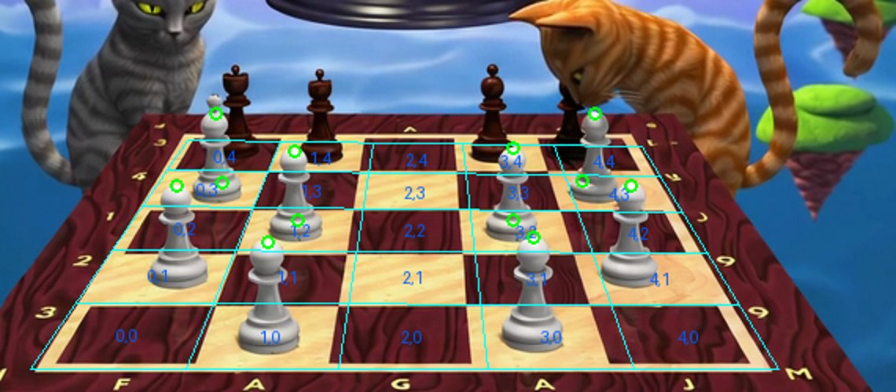
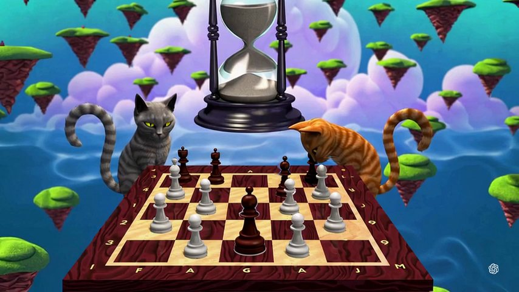
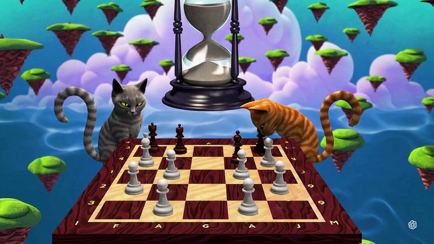
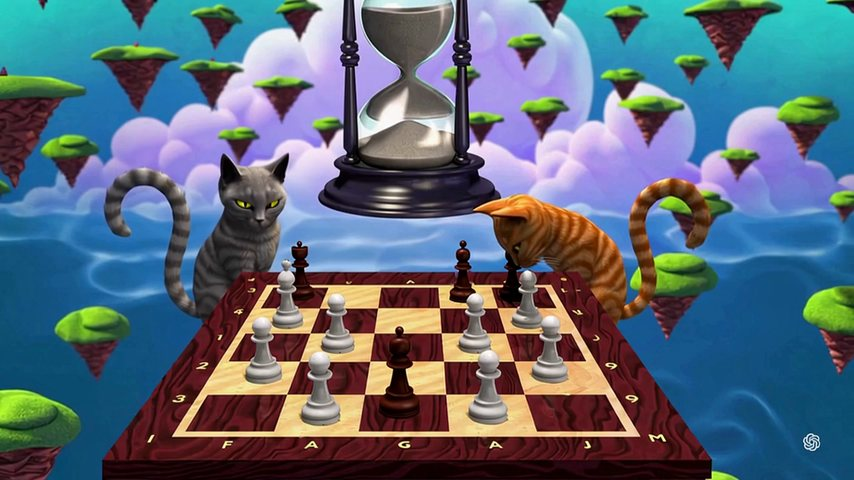
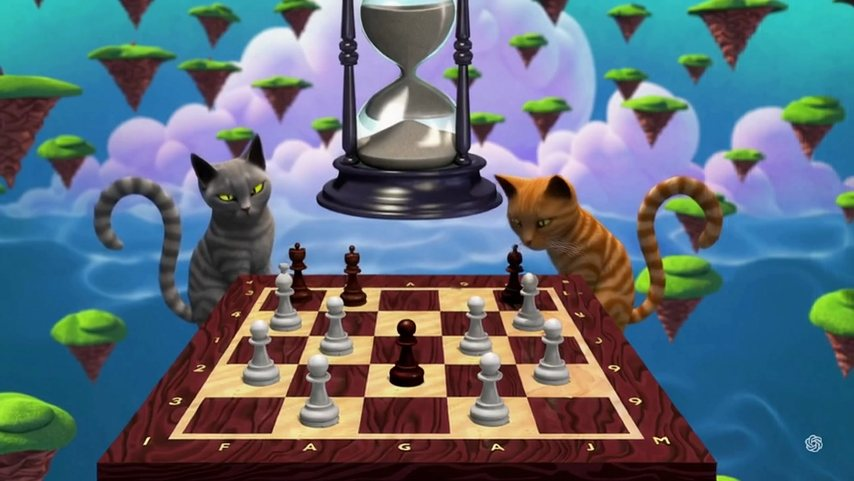

Cats Playing Chess
A Sora clip of two cats at a chessboard. AM built the board as exact geometry, worked out one pawn's move as numbers for every frame, and locked them. A video model painted the move four times; we measured each take against AM's numbers.
The request

"The grey cat moves a pawn two steps."
AM's answer for two steps: CANNOT. On this board every pawn's second square ahead is taken, grey or dark. So the move became one square: the dark pawn on square 3,4 goes to 3,3, toward the camera.
- Clip
- Sora, 854×480, 30 fps, 150 frames; AM's board is its last frame
- Board
- 5×5 squares (Sora drew 5×5, not 8×8), seen from 13.1° above its surface
- Squares
- column, row: columns 0–4 from the left, rows 0–4 from the camera
- Pawn
- square 3,4 · foot (460, 303) px · 61 px tall
What AM worked out before generation
The map. AM's eyes measured 6 objects through all 150 frames in 3D. AM's core reasoner ruled 8 of their 36 own numbers with a proven rule (EXACT, REPEAT, LOCAL) and answered CANNOT for 28, and for the camera: Sora's frames wobble and morph. 116 s on the Mac, no tokens.
The board. AM learns the board's two colours from where they meet, finds the grid size (it tries 3 to 10 squares), and refines the four corners until the pattern fits: 98.7% of 303 samples agree. The lens then gives the board in 3D.
The shot. The pawn's place on the board and its size on screen at every one of 91 frames, through AM's lens and board, locked with SHA-256 before anything was generated.
One mistake on the way: the first locked plan moved the crowned piece in front of the grey cat, picked by height instead of shape. It was voided before anything was generated and locked again on the real pawn.
How AM's math drives the shot
Every take
Kling 4.0 Edit · the pawn slides by itself

Kling 4.0 Edit · the orange cat lifts the pawn

Kling 4.0 Edit · the grey cat moves the pawn

FLUX 3 Edit · the grey cat moves the pawn

Why two takes went their own way
The pawn that moves stands next to the orange cat, at the far end of the board from the grey cat. Asked to have the grey cat move it, both FLUX and Kling made the grey cat move a piece within its own reach, down the empty middle column, and AM's numbers were ignored. When the ask fit the scene, Kling followed AM except where it had to invent the paw's lift. With nothing to invent, it followed every frame.
What it cost
| Item | Measured | Cost |
|---|---|---|
| AM: map (149.5 s), board, locked plan, guide | about 166 s, 0 tokens | about $0.0014 |
| FLUX 3 Edit, take 1 (2.5 s) | about 455 credits | about $0.09 |
| Kling 4.0 Edit, takes 2–4 (3.03 s each) | about 15,735 credits | about $3.15 |
| The exact shot, take 4 alone | 1 take | about $1.05 |
Credits at the listed rates (FLUX 182, Kling 1,730 a second) and $0.0002 a credit.
How it was measured
- The same detector reads the pawn's head in AM's guide and in the painted video, frame for frame, in the same window, so its bias cancels. The head, because the foot hides behind the grey pawn in front once the dark pawn lands.
- 16 grey pawns that never move sit within about 1 px of the original frame in Kling's video (scale 1.0009): camera and board unchanged.
- After 3.5 s the detector reads 8 px; pixel alignment between 3.0 s and 4.0 s gives a shift of 0 px. A highlight brightened; the pawn did not move.
- Two earlier detectors were discarded: one locked onto dark squares, one compared different points of the pawn.
- Every lock was checked with sha256sum after generation.